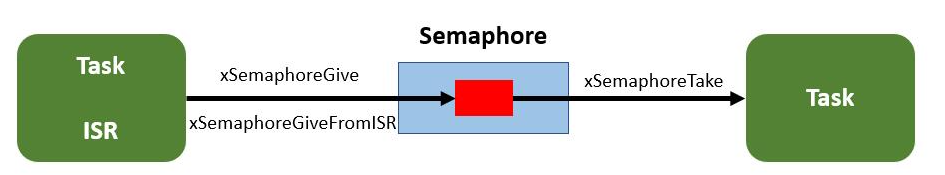

信号量
二进制信号量
二值信号量工作示意图：

xSemaphoreGive
函数原型：BaseType_t xSemaphoreGive( SemaphoreHandle_t xSemaphore );
xSemaphore创建的信号量句柄BaseType_t返回类型：pdPASS（Give成功），pdFAIL（Give失败）
按键消抖
该例子使用 二值信号量实现按键消抖。
/*
* 外部中断 0,1 处理函数
*/
void EXTI0_1_IRQHandler(void)
{
BaseType_t result;
BaseType_t xHigherPriorityTaskWoken = pdFALSE;
if(RESET != exti_interrupt_flag_get(BOARD_BTN_EXTI_LINE)) {
xSemaphoreGiveFromISR(semaphore_1, &xHigherPriorityTaskWoken);
if (result == pdTRUE)
{
// Give 成功
portYIELD_FROM_ISR(xHigherPriorityTaskWoken);
}
exti_interrupt_flag_clear(BOARD_BTN_EXTI_LINE); // 清除中断标志
}
}
void app_main(void)
{
semaphore_1 = xSemaphoreCreateBinary(); // 创建信号量
xTaskCreate(key_scan_task, "key_scan_task", 128, NULL, 1, NULL);
xTaskCreate(led_task, "led_task", 128, NULL, 1, NULL);
vTaskStartScheduler(); // 启动调度器
}
void led_task(void *pvParameters)
{
while(1) {
xSemaphoreTake(semaphore_1, portMAX_DELAY);
vTaskDelay(10);
if(gpio_input_bit_get(BOARD_BTN_PORT, BOARD_BTN_PIN) == RESET)
{
gd_eval_led_toggle(LED1);
}
}
} // led_task